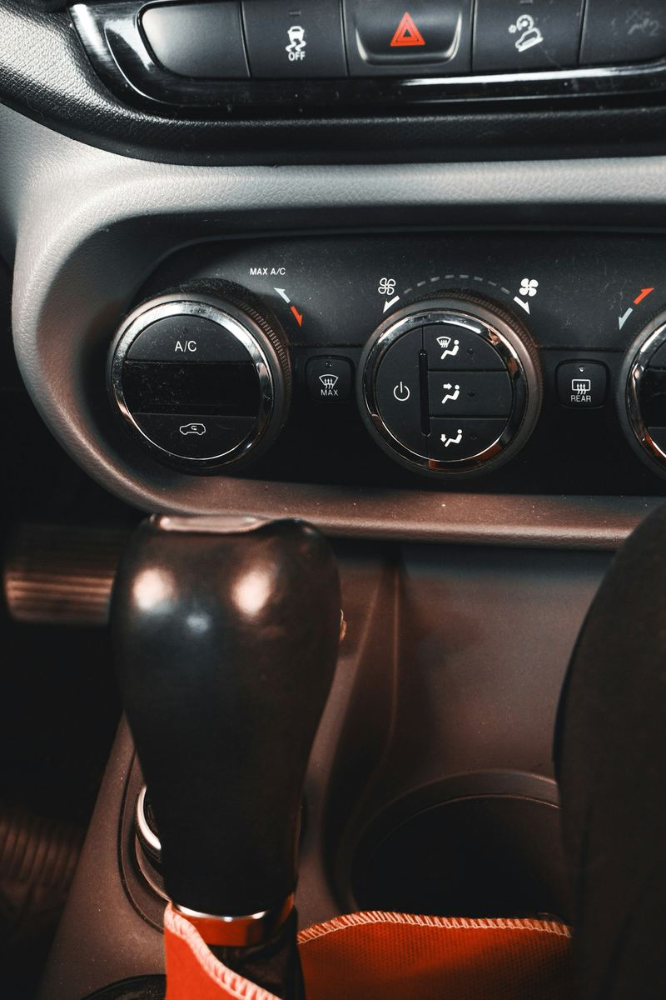

Autoservis ve Vítkově
Petr Závodný, Komenského 166. Opravy a diagnostika, klimatizace, pneuservis a geometrie, příprava na STK, tažná zařízení, nástřik dutin a elektroinstalace.
Po–pá 7–12 a 12:30–15:30

Kdy na výměnu oleje?
Zadejte, kdy a při kolika kilometrech jste měnili olej. Interval berte z návodu k autu, nejčastěji 15 000 km nebo jednou za rok.
Co u nás uděláme
Kompletní servis osobních aut na jednom místě.

Opravy a diagnostika
Mechanické opravy a diagnostika.

Klimatizace
Opravy a údržba klimatizace.

Pneuservis a geometrie
Přezutí, vyvážení a geometrie náprav.

Příprava na STK
Prohlídka a opravy před technickou.

Tažná zařízení
Montáž tažných zařízení.
Nástřik dutin a podvozku
Ochrana proti korozi, elektroinstalace.
5,0 z 5
hodnocení zákazníků na Firmy.cz
Rady z praxe
Všechny články- Adresa
- Komenského 166, Vítkov
- Otevřeno
- po–pá 7–12 a 12:30–15:30
- Služby
- opravy, klima, pneu, STK, dutiny